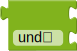
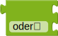
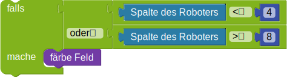

Logische Verknüpfungen
Programmiere den Roboter:
Der Roboter soll alle markierten Felder  färben.
färben.
Bitte schau dir vorab die Erläuterungen der Bausteine unter "weitere Hinweise" an.
Beachte: Dein Programm muss mit allen Testfällen zurechtkommen.
Weitere Hinweise:
Das Ziel ist es, ein Programm zu schreiben, dass nur aus einem wiederhole-Baustein und einer Bedingung
besteht, wie folgt:
Um eine geeignete Bedingung zu wählen, nutze die Spalte, in der sich der Roboter befindet.
Mit dem -Baustein können zwei Bedingungen miteinander verknüpft werden. Damit die verknüpfte Bedingung
True ist, müssen beide Bedingungen erfüllt sein.
Mit dem -Baustein können zwei Bedingungen miteinander verknüpft werden. Damit die verknüpfte Bedingung
True ist, muss eine der Bedingungen erfüllt sein.
Mit dem kleinen Pfeil kann zwischen "und" und "oder" gewechselt werden.
Im folgenden Beispiel wird das Feld gefärbt, wenn die Spalte des Roboters kleiner als 4 oder größer als 8 ist.

Das Ziel ist es, ein Programm zu schreiben, dass den Roboter über alle Felder des Gitters gehen lässt, und eine Bedingung verwendet um zu entscheiden, ob ein Feld gefärbt werden soll oder nicht. Diese Bedingung kann von der Zeilennummer und von der Spaltennummer des Roboters abhängen.
Hinweis: Die Felder unter der Diagonalen sind Felder bei denen die Spaltennummer echt kleiner als die Zeilennummer ist.
Dein Programm sollte die Anweisung nur einmal enthalten.